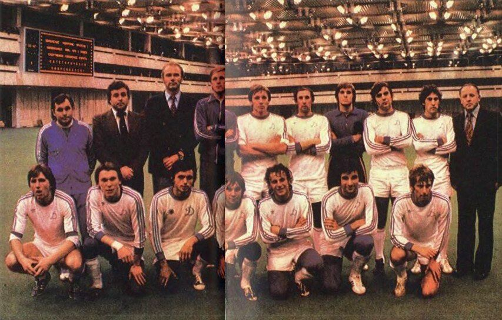

<section class="history">
  
  <div class="history__timeline">
    <div class="history__event">
      <small class="history__year">1927</small>
      <h3 class="history__title">Заснування клубу</h3>
      <p class="history__description">«Динамо» Київ було засновано у 1927 році...</p>
    </div>
    <div class="history__event">
      <small class="history__year">1961</small>
      <h3 class="history__title">Перший титул СРСР</h3>
      <p class="history__description">У 1961 році «Динамо» стало першим клубом за межами Москви...</p>
    </div>
    <div class="history__event">
      <small class="history__year">1975</small>
      <h3 class="history__title">Європейська слава</h3>
      <p class="history__description">Команда під керівництвом Лобановського виграла Кубок володарів кубків...</p>
    </div>
    <div class="history__event">
      <small class="history__year">1997</small>
      <h3 class="history__title">Шевченко та Ліга чемпіонів</h3>
      <p class="history__description">Команда з Андрієм Шевченком у складі дійшла до півфіналу Ліги чемпіонів...</p>
    </div>
  </div>
</section>